PLS sur des spectres proche infrarouge
Prédire le carbone organique d'un sol à partir de son spectre : le prétraitement, le nombre de composantes, les variables importantes, la validation, puis de nouveaux échantillons.
Les données sont simulées. Aucun sol n'a été mesuré : les spectres ont été fabriqués par le script spectres.R, avec des graines fixes, à partir de bandes d'absorption connues (matière organique, argile, eau) et de défauts de mesure (diffusion, décalages, bruit).
La question et les données
Doser le carbone organique au laboratoire coûte cher ; mesurer un spectre proche infrarouge, peu. Avec 120 échantillons dont on a les deux, peut-on prédire le carbone des suivants à partir de leur seul spectre ?
Téléchargez sols_spectres.csv (120 échantillons) et sols_nouveaux.csv (20 nouveaux, sans leur carbone) :
| Colonne | Contenu |
|---|---|
| echantillon | S001 à S120 (N001 à N020 pour les nouveaux) |
| occupation | prairie ou culture |
| cos | le carbone organique du sol, en g/kg (absent du fichier des nouveaux) |
| 1100 … 2500 | l'absorbance à chaque longueur d'onde, de 1100 à 2500 nm tous les 10 nm (141 colonnes) |
Ouvrez le premier avec Fichier › Ouvrir : 120 observations et 143 variables. Les colonnes nommées par un nombre sont les variables d'un spectre, dans l'ordre du tableau.
1. Le modèle
Modèle › Nouveau modèle (Ctrl+N). Dans l'onglet Général :
- Type : PLS ;
- Échelle par défaut : Centrage seul. Pour des spectres, on centre souvent sans réduire : les longueurs d'onde gardent leur poids naturel ;
- Prétraitement des spectres : 1. SNV, puis 2. Detrend (polynôme de degré 2). Le SNV centre chaque spectre et le divise par son écart-type, ce qui retire l'effet de la taille des grains et du tassement ; le detrend retire la pente qui reste (Barnes et al., 1989) ;
- Composantes : automatique (validation croisée), avec 7 groupes à tour de rôle.

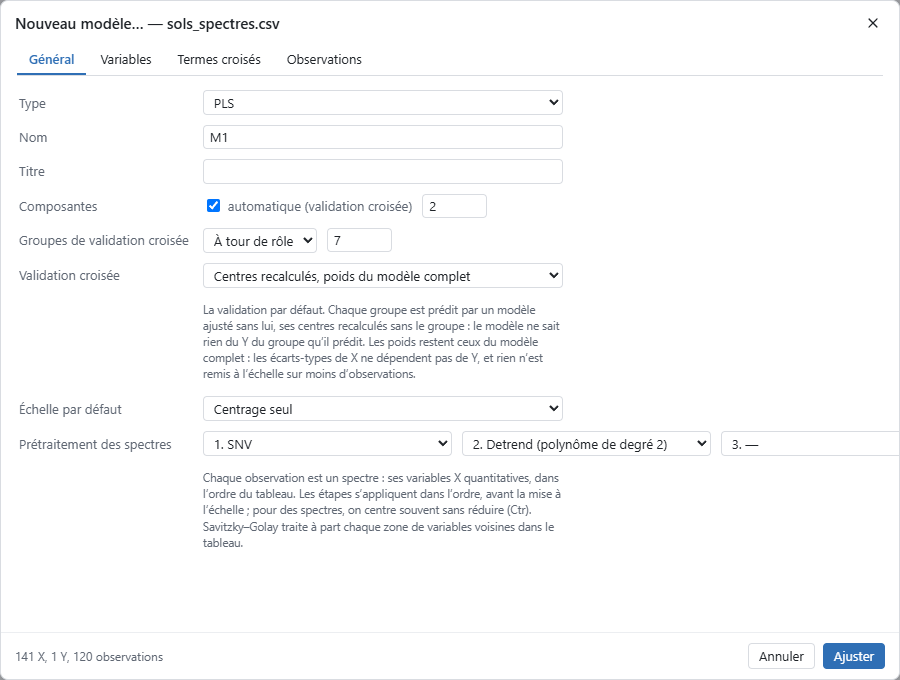

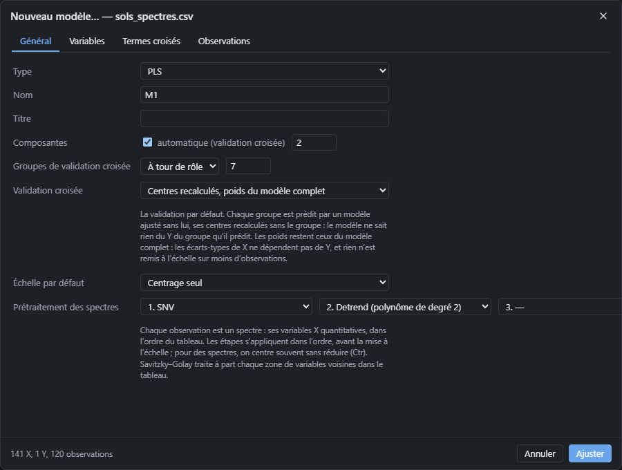
Dans l'onglet Variables, la liste Rôle… au-dessus du tableau règle d'un coup toutes les
variables affichées : choisissez X, puis donnez à cos le rôle Y et laissez
occupation sans rôle (—).

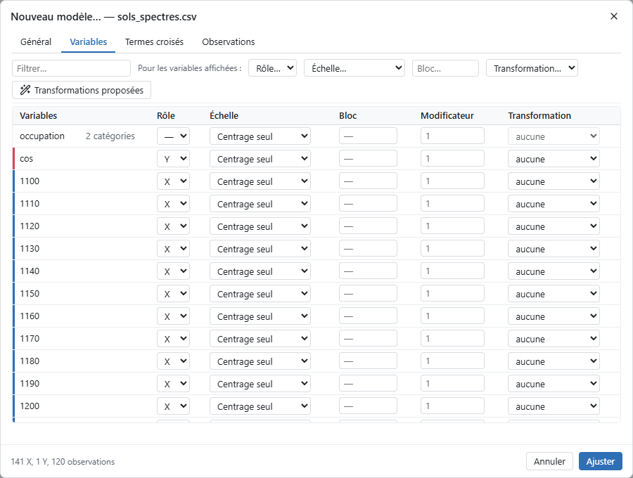

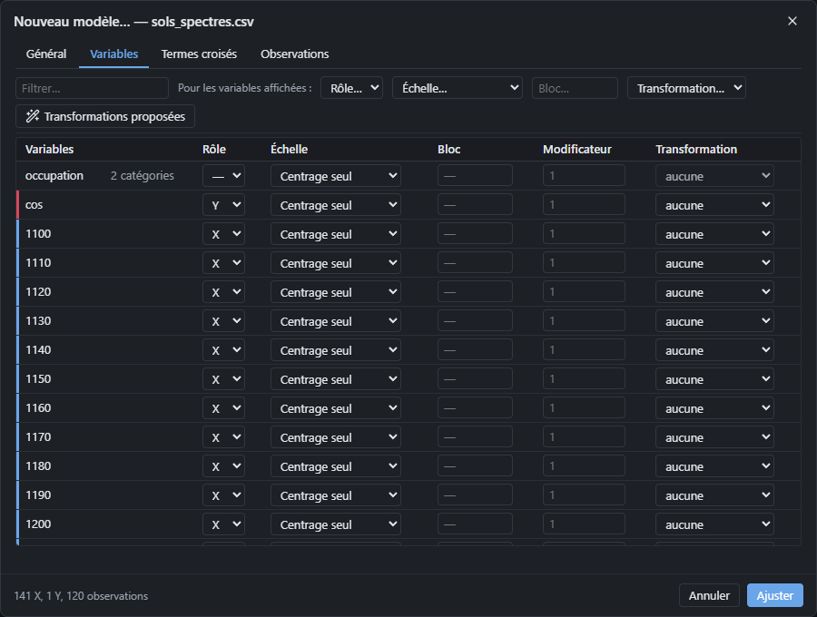
Cliquez sur Ajuster.
2. Les spectres avant et après le prétraitement
Graphiques › Profils (spectres), Afficher : Spectres. Cochez Avant prétraitement pour voir les spectres tels qu'ils ont été lus : ils sont décalés et inclinés les uns par rapport aux autres, et ces différences n'ont rien à voir avec le carbone.

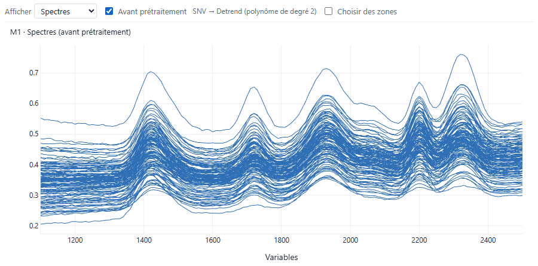

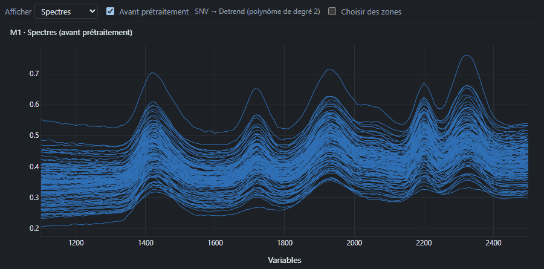

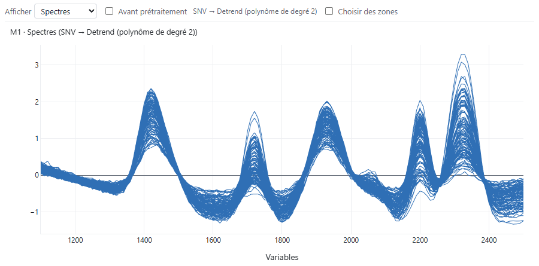

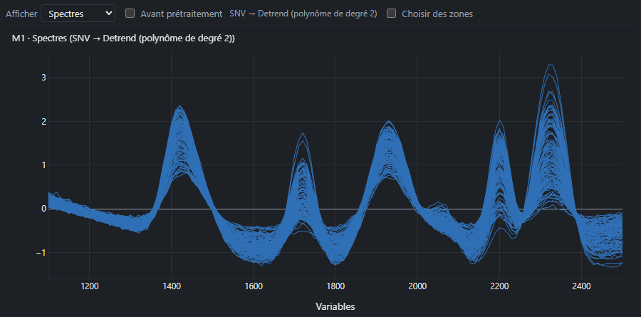
3. Le résumé : combien de composantes ?

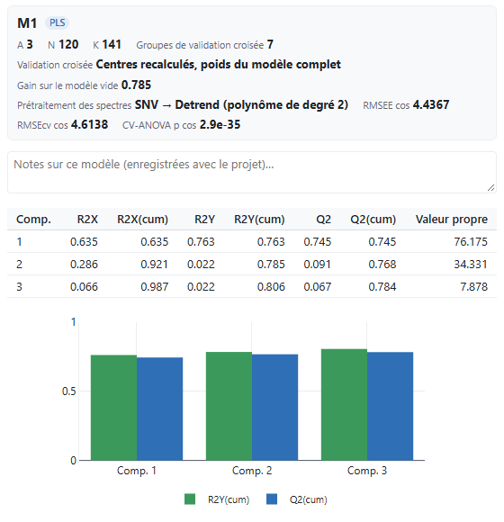

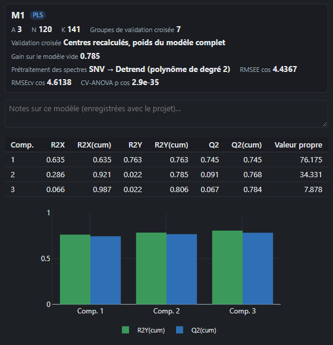
L'ajustement automatique garde 3 composantes : chacune améliore la prédiction en validation croisée (Q2 de la composante positif). Ensemble, elles expliquent 98,7 % de la variance des spectres (R2X) et 80,6 % de celle du carbone (R2Y). Le Q2 cumulé, la part de la variance du carbone prédite pour des échantillons que le modèle n'a pas vus, est de 0,78.
En validation croisée, chaque groupe d'échantillons est prédit par un modèle ajusté sans lui : l'erreur de prédiction (RMSEcv) est de 4,6 g/kg, à peine plus que l'erreur d'ajustement (RMSEE, 4,4 g/kg). Le gain sur le modèle vide (0,78) compare le modèle à la prédiction la plus simple, la moyenne du carbone. La CV-ANOVA donne p < 0,001.
4. Les longueurs d'onde importantes
Graphiques › Profils (spectres), Afficher : VIP. Pour un spectre, les VIP se lisent mieux en ligne, en fonction de la longueur d'onde.

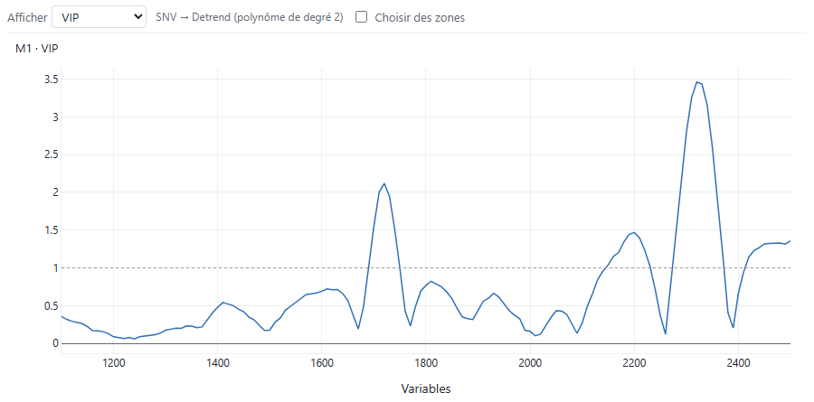

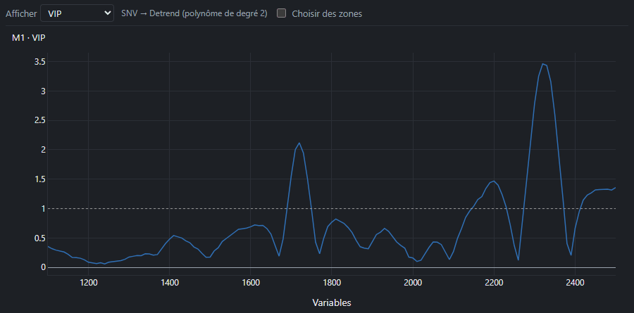
Les VIP les plus hauts sont autour de 2310 à 2350 nm et de 1720 nm, deux bandes de la matière organique (liaisons C–H) ; plus bas, une bande de l'argile vers 2200 nm et la fin du spectre. Le modèle s'appuie donc bien sur les bandes du carbone. Graphiques › VIP les donne aussi en barres, avec un seuil placé automatiquement ; Réajuster avec les variables VIP refait le modèle avec celles-là seules.
5. Observé et prédit
Graphiques › Observé / prédit, coloré par occupation :

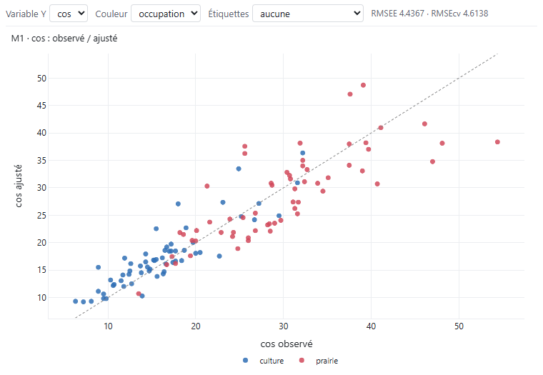

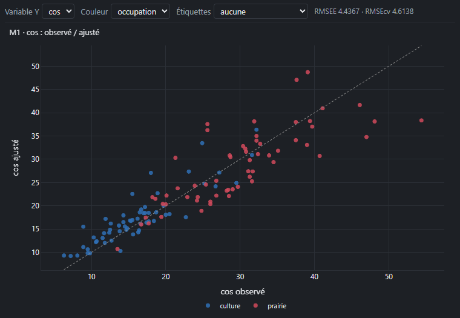
Les points suivent la diagonale, les prairies en haut, les cultures en bas. Les sols les plus riches (au-delà de 40 g/kg) sont un peu sous-estimés : il y en a peu, et le modèle est linéaire.
6. Le test de permutation
Un modèle à 141 variables pour 120 observations peut s'ajuster au hasard. Graphiques › Test de
permutation mélange les valeurs de cos entre les échantillons, refait tout le modèle, validation
croisée comprise, et recommence (100 fois ici, 20 par défaut).

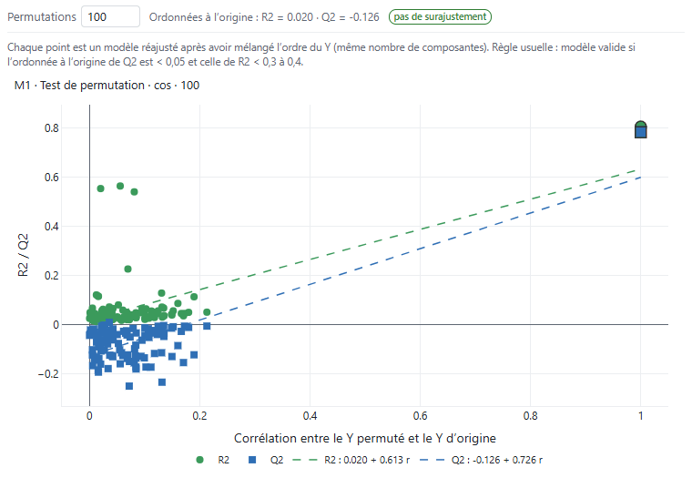

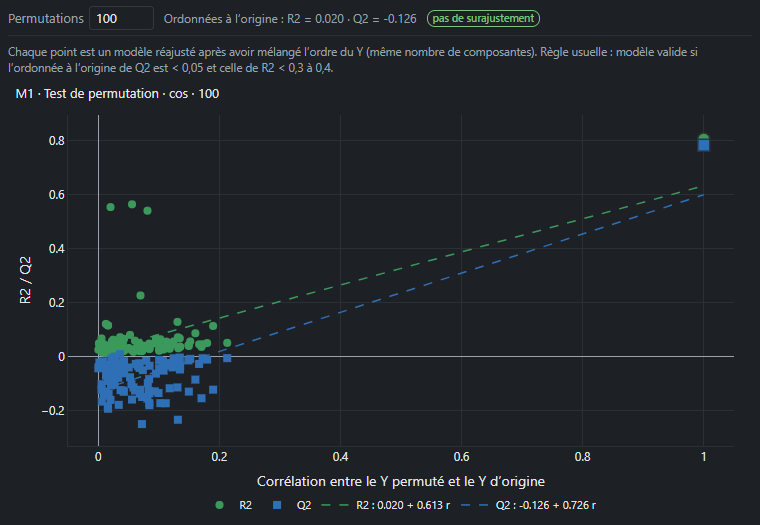
Les modèles sur un carbone mélangé ont un R2 proche de 0 et un Q2 négatif : les ordonnées à l'origine des droites, R2 = 0,02 et Q2 = −0,13, sont sous les seuils usuels (0,3 à 0,4 pour R2, 0,05 pour Q2). Le modèle ne vient pas d'un surajustement.
7. Prédire de nouveaux échantillons
Prédiction › Prédire un fichier : choisissez sols_nouveaux.csv. Ses colonnes sont reconnues par leur nom ; chaque spectre est prétraité comme ceux du modèle, puis projeté sur ses composantes.

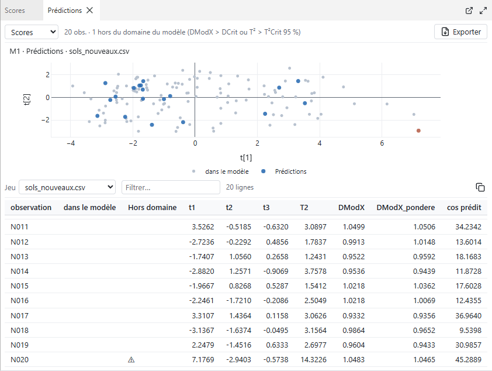

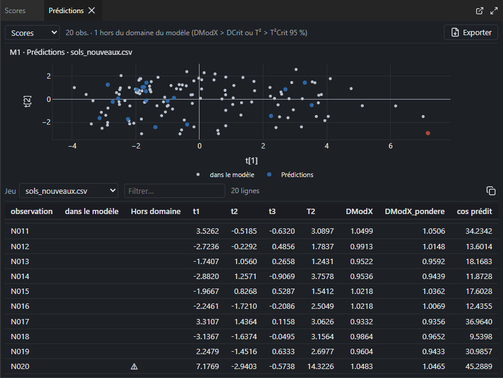
La dernière colonne, cos prédit, donne le carbone de chaque échantillon. Nuée signale aussi ceux qui sont hors du domaine du modèle, loin des échantillons d'étalonnage (T² au-delà de sa limite à 95 %) ou mal décrits par lui (DModX au-delà de DCrit) : ici N020, très à droite sur le graphique des scores. C'est un sol tourbeux, bien plus riche en carbone que tous ceux de l'étalonnage : sa prédiction (45 g/kg) est une extrapolation, et ne vaut rien. Un tel échantillon se dose au laboratoire, et peut ensuite rejoindre l'étalonnage. Exporter écrit le tableau.
8. Le texte des méthodes
Modèle › Texte pour la section Méthodes écrit, entre autres :
Chaque spectre (les 141 variables X quantitatives, dans l'ordre du tableau) a d'abord été corrigé par SNV (Barnes et al., 1989) et detrend (polynôme de degré 2 retiré ; Barnes et al., 1989). Les variables X ont été centrées seulement.
Nous avons ajusté une régression PLS (moindres carrés partiels ; Wold et al., 2001) par l'algorithme NIPALS, avec 3 composantes. La validation croisée comptait 7 groupes (l'observation i dans le groupe i modulo 7) ; chaque groupe a été prédit par un modèle ajusté sans lui, avec un centrage recalculé sur les autres observations et la mise à l'échelle du modèle complet.
et le texte des résultats donne les variables les plus importantes :
Les variables les plus importantes (VIP > 1) : 2320 (3,5), 2330 (3,4), 2310 (3,3), 2340 (3,2), 2300 (2,8), 2350 (2,6), 2290 (2,1), 1720 (2,1), entre autres.
Pour aller plus loin
- Graphiques › iPLS (intervalles du spectre) ajuste une PLS sur chaque morceau du spectre et montre lesquels prédisent le mieux ; Choisir des zones, dans la vue des profils, fait un nouveau modèle sans une zone (les bandes de l'eau, par exemple).
- Un jeu de test (Nouveau modèle › Observations, au hasard ou par Kennard–Stone) garde des échantillons hors du modèle et de la validation croisée, puis les prédit.
- Fichier › Exporter vers R écrit un script qui refait le prétraitement, l'algorithme NIPALS, la validation croisée et les graphiques en R seul, sans paquet.
- Le guide : les spectres et leur prétraitement, les VIP, la validation, la validation croisée, le jeu de test et la prédiction.